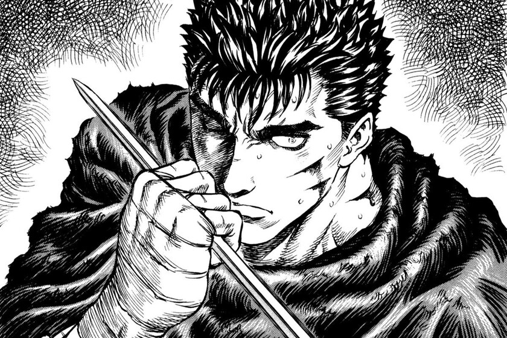
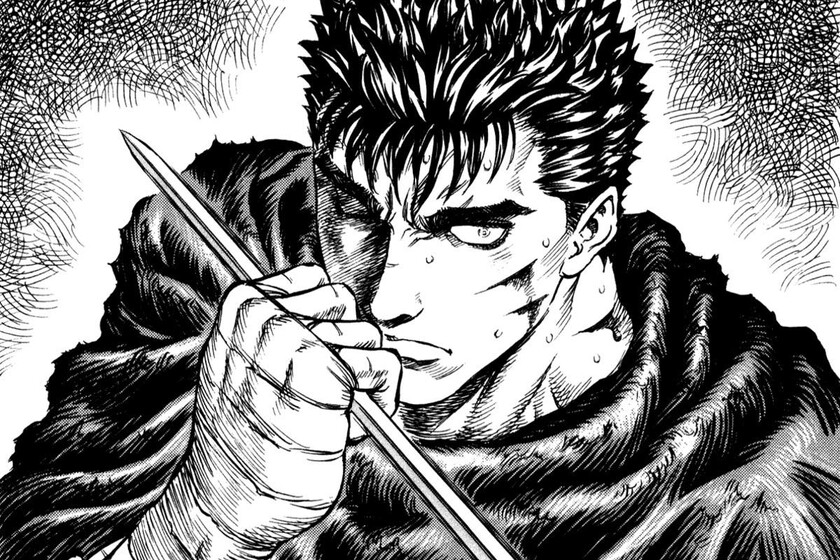

Resumen Dragon Ball
Dragon Ball nos cuenta la vida de Son Goku, un niño inspirado en la leyenda china del rey mono que tiene cola de simio, una nube voladora y un bastón mágico y que acompaña a Bulma por el mundo en busca de las Bolas de Dragón: siete esferas capaces de conceder cualquier deseo al juntarlas e invocar al dragón Shenlong. Durante este viaje irá mejorando sus habilidades como luchador y conocerá a los personajes que le acompañarán durante la mayor parte de la serie: Krilin, Yamcha, Ten Shin Han, Muten Roshi o Piccolo. Esta primera parte de la serie se caracterizó por ser muy cómica y desenfadada, objetivo inicial con el que Toriyama crearía Dragon Ball, aunque más tarde diera un giro radical en este sentido. Son Goku crece Dragon Ball Z se sitúa unos años después de Dragon Ball: Son Goku ha crecido, se ha casado con Chi Chi y ha tenido su primer hijo, Son Gohan. En cuatro arcos nos cuenta cómo la tierra se enfrenta a varios enemigos que solo tienen un objetivo: destruirla o gobernarla. El primero de dichos enemigos se acabará conviertiendo en aliado y en uno de los personajes más populares de la serie: Vegeta, quien para muchos rivalizará en protagonismo con el mismísimo Son Goku. Tras él, apareció el mayor villano que hemos podido disfrutar en la serie, tanto que décadas después sigue siendo parte vital del argumento de la saga: Freezer. Por último tenemos a Cell y Majin Boo, buenos enemigos de Goku, pero sin el mismo carisma que Vegeta y Freezer, algo que denota el cansancio del autor con respecto a la serie.
Resumen Chainsaw Man
Cazador Demonio a sueldo haciendo trabajos para los Yakuza. Los poderes motosierra de Pochita son útiles contra estos poderosos demonios. Y cuando Denji termina siendo asesinado por un demonio, Pochita se sacrifica para salvar su vida y revivirlo. Pero ahora Denji ha renacido como una especie de extraño híbrido Demonio-Humano. ¡Ahora es Chainsaw Man! Después de su transformación, es reclutado rápidamente por Makima y obligado a unirse a los Cazadores de Demonio de Seguridad Pública bajo amenaza de exterminio ahora que técnicamente es un demonio. Ahora que vive cómodamente por primera vez en su vida, Denji lucha por determinar sus sueños y establecer relaciones significativas mientras mata demonios y trabaja junto a otros excéntricos cazadores.
Resumen Naruto
Todo comienza cuando Naruto era pequeño, cuando un zorro de 9 colas llegaba a su aldea para destruirla pero su padre, Minato, sacrificó su vida para sellar a este monstruo dentro de su hijo, Naruto.Naruto nada mas comenzar la serie es un alumno poco ejemplar aunque tenía el sueño de ser el Hokai más fuerte de todos. En el primer capítulo podemos ver como Naruto se enfrenta a un villano que quería robar uno de los pergaminos más importantes de la aldea pero con la ayuda de su profesor acaban con él y de esta manera Naruto se convierte en un joven ninja. Más tardes, Naruto fue elegido para ser integrante del equipo 7 junto a Sakura y Sasuke. En este momento sería cuando Naruto y su equipo comenzarían a realizar misiones, la mayoría muy simples pero una que Naruto consideró muy importante, la de acompañar a un viejo constructor (Tazuna) al país de las olas, ya que a Naruto sentía que pasaría algo malo. Y así fue, justo en esos momento fue cuando aparece por primera vez el primer villano en Naruto, Zabuza Momochi y su compañero Haku. Estos dos villanos tenían la orden de acabar con Tazuna pero, Naruto, Sasuke y Kakashi lograron derrotarlos. En el segundo arco argumental, es decir, la segunda saga de Naruto, la saga de los exámenes Chunin donde ponen a prueba a los jóvenes ninjas de la nuevas generación con exámenes escritos y desafíos en bosques que hacen revelar la torpeza de Naruto en el trabajo en equipo. Sin embargo, en el segundo desafío se encuentran con unos rebeldes de la aldea del sonido que atacarán a los miembros del equipo 7 y será aquí donde Naruto demostrará su verdadero poder.Una vez salen del bosque, el equipo 7 llega a las preeliminares donde el examen Chunin trata de un enfrentamiento de varios alumnos de diferentes equipos elegidos al azar. Una vez finalizados los preeliminares de los examenes Chunin llegan a la final pero antes, Naruto se pone a entrenar junto a Jiraiya. Mientras tanto, se lleva a cabo una conspiración de la Aldea del Sonido y de la Aldea de la Arena contra la Aldea de la Hoja donde Hayate es asesinado por Baki.Más tarde, se pasará al tercer examen donde los vencedores de las preliminares se enfrentarían para dar a conocer un claro ganador. En los capítulos siguientes, hay una sensación de tristeza debido a la muerte del tercer hokage y esto acabaría dando pie al tercer arco argumental de Naruto donde Naruto y Jiraiya van a buscar a la nueva hokage El tercer arco argumental de Naruto es bastante simple y rápido, donde Itachi intenta vengar la muerte de su padre aunque no lo logra. En este arco también se dará un momento clave, donde Naruto aprenderá el rasengan.El cuarto arco argumental y último de la primera temporada, Naruto visita en el hospital a Sasuke pero Sasuke está muy furioso y desafia a Naruto. En ese momento Kakashi aparece y detiene el enfrentamiento . En ese momento, Sasuke se siente debil y orochimaru aproecha la oportunidad de hacerse con los ojos de de un uchiha prometiéndole que él le entrenaría. Naruto acabará enterándose de esto y va en su salvación junto con más personajes. Por el camino se encuentra con 4 ninjas de la Aldea del Sonido generándose unos duros enfrentamientos y entre medias aparece Sasuke y Naruto lo verá pero Sasuke huye y le persigue has encontrarse y enfrentarse en una batalla final. Naruto perdera y Sasuke se marchará de la Aldea de la Hoja, terminando así la primera temporada de Naruto.


 
